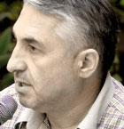

SAHAKASHVILI, ALIYEV, AND SARGSYAN ARE MAKING THE DECISIONS, AS FOR PUTIN, HE IS FISHING IN THE MUDDY WATERS OF SOUTH CAUCASUS

Ashot Bleyan
Ashot Bleyan
director
of the educational complex
«Mkhitar Sebastaci»
ex-minister
of education
of Armenia
What are Armenia’s perceptions on the august events that took place in Georgia?
Unfortunately the imperial way of thought continues to be dominant in Russia today. I think the military actions in Georgia that began on August 8 were planned in advance. Had it not happened in South Ossetia it would’ve probably occurred in Abkhazia. All the occurrences only prove that Russia was always on the way to possess what it has today.
I felt everything that happened in Georgia through me. Whenever I saw a report on Russian TV stations I understood the subliminal message: «Here are the Barbarians of Caucasus – and we are the ones who are saving them from themselves». Insulting is it not… 200 years, Russia does anything it pleases in the Caucasian region. And to this day we could not collect enough wisdom to find a common language... Based on the August events, this is the most important lesson for me.
Did the events that occurred in Georgia have any kind of influence on Armenia?
Of course the Georgian events had an influence on us. But Armenia could’ve felt it a lot more, had it been living in a development regime. Oh well, we don’t live in such a regime. The Armenian society has lost something unnoticeable when you look at the big picture. Unfortunately we’ve grown accustomed to living that way, and often, we don’t even care. That’s very destructive for us. Today Armenia lives in another world, a world practically independent from other countries. We live in a deadlock. Armenian economics develops by it self and often-worldwide events have very little effect on Armenia. We’re used to the life in isolation.
The road through Georgia means a lot for Armenia, it’s the road of life. At another glance, seeing how Armenia is used to living in isolation, I’d say that Armenia could continue existing without that road. By the way, from that Georgia should proceed. If in Tbilisi they think they can punish Armenia by closing the roads and excluding us from certain projects, its not so. It’s just not so any way you look at it.
There were people in Armenia that were happy about the situation in Georgia. Nowadays when I hear: «Its good that Russia punished Georgia» it saddens me...
Is it possible that Moscow will use Armenia strategically in the Russian-Georgian conflict?
I think that Russia is also considering it, and that Russia considers Armenia to be a government within its own territory. Moscow is already using Armenia. We still don’t know weather any troops were used from the Russian military bases in Armenia, in the acts against Georgia. Sure there are reports that there weren’t but who believes that? The society doesn’t even know weather there is some sort of a control system over the Russian military base. I’m not sure the Armenian authorities will be posted if the General Headquarters of Russia decides to use the military base in Armenia against Georgia. If Moscow decides to use the base then it will in any event.
Do you believe that Russia could try and create a conflict between Armenia and Georgia as well?
Of course. We the three nations of Caucasus, Azerbaijanians, Georgians, and Armenians are guilty of giving Russia such a great opportunity to provoke us against each other. Russia profits from the distrust of these three nations. Georgians think they can solve some of their own problems around the interests of Armenia without Armenia’s agreement. That means in Tbilisi they consider once they’ve agreed with Baku on constructing the Baku-Akhalkalaki-Kars railway then the problem is solved. This way Georgia is putting Armenia in more of a deadlock and not giving Armenia a chance to get out of Russia’s influence. And that’s hazardous for all of us! All South Caucasian countries have an enormous quantity of problems, because we missed an opportunity, which the Baltic countries used after the collapse of the USSR. As a member of ANM (Armenian National Movement) in 1991 I was invited to Riga for meeting with Azerbaijanians. Even back then they were telling us about first consulting with other countries, before taking any steps towards solving of problems or questions that are in the interests of one of the countries, and proceed only after all countries have agreed. They taught us that the countries of South Caucasus could also take the same path as the Baltic countries did. But we didn’t understand them and we didn’t take anything out of the lessons, which were presented, by the Baltic countries. And that’s exactly why we’re paying such a high price today. Today Russia is cleverly using all contradictions between our countries to manipulate us against each other. And we continue not to trust each other both on cultural and governmental levels. That’s the main problem when it comes to the mutual relations of the countries in South Caucasus. The existence of mistrust on cultural level is the most insulting.
I took a trip to Baku in 1992; it was necessary for Yerevan and Baku to come to a mutual agreement. At that time Azerbaijan had a new elect president Elchibey, a specialist on eastern cultures, same as Armenia’s president at that time Levon Ter –Petrosyan. It seemed that they should have understood each other, it also seemed that a new epoch had started, an epoch of new way of thinking which was going to be built on trust, but... The epoch of trust didn’t come...
The Russian empire continues to exist and unfortunately we can’t counter present it anything. We haven’t fully grown to the point where we can prevent a war in our own countries because we continue to stay the way we were.
What do you think, as a result of the August events in Georgia, was the division of the countries in south Caucasus final? You were talking about our countries missing and opportunity to build trust. Are there any chances today? Especially now that Armenia is heading towards Russia and Georgia towards the west…
... I don’t understand what you mean when you say heading toward some one. If we’re going to head toward each other and the west will head toward us then it will be with us. How can any of us be a western country if he can’t find a common language with his neighbors? We all live here together; you cannot escape from the geography. To say it bluntly, you can’t put one of the countries of South Caucasus in the European Union, the other in Russia, and the third somewhere else. We don’t possess the fundamentals – standard western thinking, standard cooperation, and western democratic values. I don’t see us solving our problems of normal coexistence without mutual cooperation. Yes, we’ve lost a lot of time, but its better to understand it late than never. And the more time we lose the more our losses will multiply. Isn’t it enough for our countries to keep losing all the time?
I was very insulted by what the Georgian and Ossetian people allowed to happen in august. Azerbaijan and Armenia also expressed such barbarian behavior toward one another and now it isn’t matter who has more or a lesser fault in it. Russia continues to control the situation in Abkhazia and South Ossetia as it did, only now under an official sauce. It is also a fact that it’s been long since Russia and its “peace keepers” have occupied Abkhazia and South Ossetia. And nothing changes even after Russia’s recognition of their independence. Moscow only showed what it was trying to achieve all these years and has put everything in its place. I never understood the term “frozen conflict”, there either is a conflict or not.
The leader of the Armenian opposition Levon Ter-Petrosyan supported Russia’s actions in Georgia, while the Armenian authorities simply stayed silent
I’m very afflicted by Ter-Petrosyan’s announcement, I wish it wasn’t there but…I know that many activists of Ter-Petrosyan’s opposition also don’t agree with him. Perhaps Ter-Petrosyan tried to save his opposition movement from submission by making such a populist statement. The opposition movement itself represents a mosaic of a kind, which is made up of many different opinions and perceptions, at times differing from each other. If Ter-Petrosyan really thinks so, then that’s nothing good even for him. We can also say that for Ter-Petrosyan’s opposition movement the conflict between Georgia and Russia was very untimely. All attention concentrated on the outside and Ter-Petrosyan said something not to become obsolete.
You say there are people in the opposition that don’t agree with Ter-Petrosyan, however their voices were not heard…
For example a member of ANM Aram Manukian said that he doesn’t agree with Ter-Petrosyan.
Can the events in Georgia somehow change the internal situation in Armenia?
I doubt they will change anything but they will have an influence. The empowerment of the current government happened on the background of those events and the authorities played on it very well. They got a very good chance to legitimize themselves.
After the August events in Georgia, did the Dashnaktsutyun Party raise a question of the autonomy of the Georgian region Javakheti? What is your opinion will there be any attempts to make the situation in Javakheti edgier?
There have always been such attempts and intentions; there are forces that will try to destabilize the situation in Javakheti in the future as well. What’s important to me is that the population of Javakheti doesn’t fall for such provocations. The Georgian government as well as the people should value that Javakheti could become a sturdy bridge between the Georgians and Armenians. Just as Nagorno Kharabakh should not be the apple of discord between Armenia and Azerbaijan, on the contrary it should become a connecting bridge between our countries. All people want to live their own lives and governments must insure the people with the right to normal life. Is it the fault of the population in Javakheti that parties like Dashnaktsutyun exists or that there are provocateurs?
In Armenia I often heard the opinion that the conflict in Abkhazia and South Ossetia are already solved, furthermore they were solved due to the war…
I would have been more respectful to the aspiration of self-determination of the Abkhaz and Ossetian people. But they’re dependent in everything from Russia, and Moscow’s recognition of their independence was not the decision of Abkhazian and Ossetian people. Moscow has established a marionette regime in both Ossetia and Abkhazia and continues to function, as it functioned in the beginning of the XX century. I really want to believe that Abkhazia does not dissolve in Russia as a final result, that a new generation, who will think of the originality and conservation of its own people, will come. The position in which Abkhazia is today is the end of Abkhazia. Actually this should be said about the Ossetians. Meaning these regions should be more independent in their decisions on how they should be with Georgia. The Georgians should also work in the same direction just as the Azerbaijanians should work in the direction of Nagorno Karabakh. There is no such thing as a fast and simple solution. The new Georgian imperial way of thinking has failed. Unfortunately Georgia could not distance itself from the way of thinking, of which it disapproves when it sees it in Russia.
You’re talking about the Georgian imperial way of thinking. What do you think, could Georgia find a common language with Sukhumi and Tskhinvali without any help from third sides?
Tbilisi should have shown and proven to the Abkhazian and Ossetian people that they can obtain liberty within the structure of new Georgia. This must not be proven through strength or the involvement of a third side. Naturally a government should be strong, but what does it mean to be strong? Beside us there is always Russia which is always ready to prove us that it is stronger than us…When it comes to appeal of life for the population we must be stronger than Russia.
As a head of an educational facility I’ve spent a long time trying to adjust contacts with my Georgian colleagues but they won’t answer. We spent Days of Azerbaijan in Armenia, why did it all shut down, why didn’t we progress further? Public institutions don’t work… Armenia has more contacts with France than it does with Georgia. All our countries live in isolation from each other. Sahakashvili, Aliyev, and Sargsyan are making decisions, societies are living independent one from another, as for Putin he is fishing in muddy waters of southern Caucasus.
Do you have any comments about the role of the west in South Caucasus?
There is an old saying – Help yourself and god will help you. Even if the west is playing the role of god in the southern Caucasus, the western aid will not help us until we start helping ourselves. Perhaps in the beginning of the conflicts we were closer to solving them then we are right now. And even today I don’t see any way other than the activation of society through cultural diplomacy. The west will not help us without the activity of our societies. Of course the West can send us humanitarian help, help us with the development of media etc, but we must be interested in the development our selves. I really want for Georgia to understand that.
Right now a lot depends from Georgia, because Georgia was given a unique chance to be in the center of worldwide attention. In Armenia a lot of people greeted the revolution of the roses and we were hoping that changes would occur in our country as well. Except Georgia let that chance slip through its fingers, and I am hoping not forever. I am certain that Georgia will change its perception of its people and it will be people who will want to live in new Georgia. All nations of Georgia need peace and liberty. Made by Irakli Chikhladze
Yerevan
September 2008
www.newcaucasus.com
Published: 05-11-08
This interview is made during the South Caucasus Film Festival of Peace and Human Rights in Armenia implemented by Caucasus Center of Peace-Making Initiative by support of the Eurasia
Partnership Foundation
and the American People through
the United States Agency
for International Development (USAID)
Unfortunately the imperial way of thought continues to be dominant in Russia today. I think the military actions in Georgia that began on August 8 were planned in advance. Had it not happened in South Ossetia it would’ve probably occurred in Abkhazia. All the occurrences only prove that Russia was always on the way to possess what it has today.
I felt everything that happened in Georgia through me. Whenever I saw a report on Russian TV stations I understood the subliminal message: «Here are the Barbarians of Caucasus – and we are the ones who are saving them from themselves». Insulting is it not… 200 years, Russia does anything it pleases in the Caucasian region. And to this day we could not collect enough wisdom to find a common language... Based on the August events, this is the most important lesson for me.
Did the events that occurred in Georgia have any kind of influence on Armenia?
Of course the Georgian events had an influence on us. But Armenia could’ve felt it a lot more, had it been living in a development regime. Oh well, we don’t live in such a regime. The Armenian society has lost something unnoticeable when you look at the big picture. Unfortunately we’ve grown accustomed to living that way, and often, we don’t even care. That’s very destructive for us. Today Armenia lives in another world, a world practically independent from other countries. We live in a deadlock. Armenian economics develops by it self and often-worldwide events have very little effect on Armenia. We’re used to the life in isolation.
The road through Georgia means a lot for Armenia, it’s the road of life. At another glance, seeing how Armenia is used to living in isolation, I’d say that Armenia could continue existing without that road. By the way, from that Georgia should proceed. If in Tbilisi they think they can punish Armenia by closing the roads and excluding us from certain projects, its not so. It’s just not so any way you look at it.
There were people in Armenia that were happy about the situation in Georgia. Nowadays when I hear: «Its good that Russia punished Georgia» it saddens me...
Is it possible that Moscow will use Armenia strategically in the Russian-Georgian conflict?
I think that Russia is also considering it, and that Russia considers Armenia to be a government within its own territory. Moscow is already using Armenia. We still don’t know weather any troops were used from the Russian military bases in Armenia, in the acts against Georgia. Sure there are reports that there weren’t but who believes that? The society doesn’t even know weather there is some sort of a control system over the Russian military base. I’m not sure the Armenian authorities will be posted if the General Headquarters of Russia decides to use the military base in Armenia against Georgia. If Moscow decides to use the base then it will in any event.
Do you believe that Russia could try and create a conflict between Armenia and Georgia as well?
Of course. We the three nations of Caucasus, Azerbaijanians, Georgians, and Armenians are guilty of giving Russia such a great opportunity to provoke us against each other. Russia profits from the distrust of these three nations. Georgians think they can solve some of their own problems around the interests of Armenia without Armenia’s agreement. That means in Tbilisi they consider once they’ve agreed with Baku on constructing the Baku-Akhalkalaki-Kars railway then the problem is solved. This way Georgia is putting Armenia in more of a deadlock and not giving Armenia a chance to get out of Russia’s influence. And that’s hazardous for all of us! All South Caucasian countries have an enormous quantity of problems, because we missed an opportunity, which the Baltic countries used after the collapse of the USSR. As a member of ANM (Armenian National Movement) in 1991 I was invited to Riga for meeting with Azerbaijanians. Even back then they were telling us about first consulting with other countries, before taking any steps towards solving of problems or questions that are in the interests of one of the countries, and proceed only after all countries have agreed. They taught us that the countries of South Caucasus could also take the same path as the Baltic countries did. But we didn’t understand them and we didn’t take anything out of the lessons, which were presented, by the Baltic countries. And that’s exactly why we’re paying such a high price today. Today Russia is cleverly using all contradictions between our countries to manipulate us against each other. And we continue not to trust each other both on cultural and governmental levels. That’s the main problem when it comes to the mutual relations of the countries in South Caucasus. The existence of mistrust on cultural level is the most insulting.
I took a trip to Baku in 1992; it was necessary for Yerevan and Baku to come to a mutual agreement. At that time Azerbaijan had a new elect president Elchibey, a specialist on eastern cultures, same as Armenia’s president at that time Levon Ter –Petrosyan. It seemed that they should have understood each other, it also seemed that a new epoch had started, an epoch of new way of thinking which was going to be built on trust, but... The epoch of trust didn’t come...
The Russian empire continues to exist and unfortunately we can’t counter present it anything. We haven’t fully grown to the point where we can prevent a war in our own countries because we continue to stay the way we were.
What do you think, as a result of the August events in Georgia, was the division of the countries in south Caucasus final? You were talking about our countries missing and opportunity to build trust. Are there any chances today? Especially now that Armenia is heading towards Russia and Georgia towards the west…
... I don’t understand what you mean when you say heading toward some one. If we’re going to head toward each other and the west will head toward us then it will be with us. How can any of us be a western country if he can’t find a common language with his neighbors? We all live here together; you cannot escape from the geography. To say it bluntly, you can’t put one of the countries of South Caucasus in the European Union, the other in Russia, and the third somewhere else. We don’t possess the fundamentals – standard western thinking, standard cooperation, and western democratic values. I don’t see us solving our problems of normal coexistence without mutual cooperation. Yes, we’ve lost a lot of time, but its better to understand it late than never. And the more time we lose the more our losses will multiply. Isn’t it enough for our countries to keep losing all the time?
I was very insulted by what the Georgian and Ossetian people allowed to happen in august. Azerbaijan and Armenia also expressed such barbarian behavior toward one another and now it isn’t matter who has more or a lesser fault in it. Russia continues to control the situation in Abkhazia and South Ossetia as it did, only now under an official sauce. It is also a fact that it’s been long since Russia and its “peace keepers” have occupied Abkhazia and South Ossetia. And nothing changes even after Russia’s recognition of their independence. Moscow only showed what it was trying to achieve all these years and has put everything in its place. I never understood the term “frozen conflict”, there either is a conflict or not.
The leader of the Armenian opposition Levon Ter-Petrosyan supported Russia’s actions in Georgia, while the Armenian authorities simply stayed silent
I’m very afflicted by Ter-Petrosyan’s announcement, I wish it wasn’t there but…I know that many activists of Ter-Petrosyan’s opposition also don’t agree with him. Perhaps Ter-Petrosyan tried to save his opposition movement from submission by making such a populist statement. The opposition movement itself represents a mosaic of a kind, which is made up of many different opinions and perceptions, at times differing from each other. If Ter-Petrosyan really thinks so, then that’s nothing good even for him. We can also say that for Ter-Petrosyan’s opposition movement the conflict between Georgia and Russia was very untimely. All attention concentrated on the outside and Ter-Petrosyan said something not to become obsolete.
You say there are people in the opposition that don’t agree with Ter-Petrosyan, however their voices were not heard…
For example a member of ANM Aram Manukian said that he doesn’t agree with Ter-Petrosyan.
Can the events in Georgia somehow change the internal situation in Armenia?
I doubt they will change anything but they will have an influence. The empowerment of the current government happened on the background of those events and the authorities played on it very well. They got a very good chance to legitimize themselves.
After the August events in Georgia, did the Dashnaktsutyun Party raise a question of the autonomy of the Georgian region Javakheti? What is your opinion will there be any attempts to make the situation in Javakheti edgier?
There have always been such attempts and intentions; there are forces that will try to destabilize the situation in Javakheti in the future as well. What’s important to me is that the population of Javakheti doesn’t fall for such provocations. The Georgian government as well as the people should value that Javakheti could become a sturdy bridge between the Georgians and Armenians. Just as Nagorno Kharabakh should not be the apple of discord between Armenia and Azerbaijan, on the contrary it should become a connecting bridge between our countries. All people want to live their own lives and governments must insure the people with the right to normal life. Is it the fault of the population in Javakheti that parties like Dashnaktsutyun exists or that there are provocateurs?
In Armenia I often heard the opinion that the conflict in Abkhazia and South Ossetia are already solved, furthermore they were solved due to the war…
I would have been more respectful to the aspiration of self-determination of the Abkhaz and Ossetian people. But they’re dependent in everything from Russia, and Moscow’s recognition of their independence was not the decision of Abkhazian and Ossetian people. Moscow has established a marionette regime in both Ossetia and Abkhazia and continues to function, as it functioned in the beginning of the XX century. I really want to believe that Abkhazia does not dissolve in Russia as a final result, that a new generation, who will think of the originality and conservation of its own people, will come. The position in which Abkhazia is today is the end of Abkhazia. Actually this should be said about the Ossetians. Meaning these regions should be more independent in their decisions on how they should be with Georgia. The Georgians should also work in the same direction just as the Azerbaijanians should work in the direction of Nagorno Karabakh. There is no such thing as a fast and simple solution. The new Georgian imperial way of thinking has failed. Unfortunately Georgia could not distance itself from the way of thinking, of which it disapproves when it sees it in Russia.
You’re talking about the Georgian imperial way of thinking. What do you think, could Georgia find a common language with Sukhumi and Tskhinvali without any help from third sides?
Tbilisi should have shown and proven to the Abkhazian and Ossetian people that they can obtain liberty within the structure of new Georgia. This must not be proven through strength or the involvement of a third side. Naturally a government should be strong, but what does it mean to be strong? Beside us there is always Russia which is always ready to prove us that it is stronger than us…When it comes to appeal of life for the population we must be stronger than Russia.
As a head of an educational facility I’ve spent a long time trying to adjust contacts with my Georgian colleagues but they won’t answer. We spent Days of Azerbaijan in Armenia, why did it all shut down, why didn’t we progress further? Public institutions don’t work… Armenia has more contacts with France than it does with Georgia. All our countries live in isolation from each other. Sahakashvili, Aliyev, and Sargsyan are making decisions, societies are living independent one from another, as for Putin he is fishing in muddy waters of southern Caucasus.
Do you have any comments about the role of the west in South Caucasus?
There is an old saying – Help yourself and god will help you. Even if the west is playing the role of god in the southern Caucasus, the western aid will not help us until we start helping ourselves. Perhaps in the beginning of the conflicts we were closer to solving them then we are right now. And even today I don’t see any way other than the activation of society through cultural diplomacy. The west will not help us without the activity of our societies. Of course the West can send us humanitarian help, help us with the development of media etc, but we must be interested in the development our selves. I really want for Georgia to understand that.
Right now a lot depends from Georgia, because Georgia was given a unique chance to be in the center of worldwide attention. In Armenia a lot of people greeted the revolution of the roses and we were hoping that changes would occur in our country as well. Except Georgia let that chance slip through its fingers, and I am hoping not forever. I am certain that Georgia will change its perception of its people and it will be people who will want to live in new Georgia. All nations of Georgia need peace and liberty. Made by Irakli Chikhladze
Yerevan
September 2008
www.newcaucasus.com
Published: 05-11-08